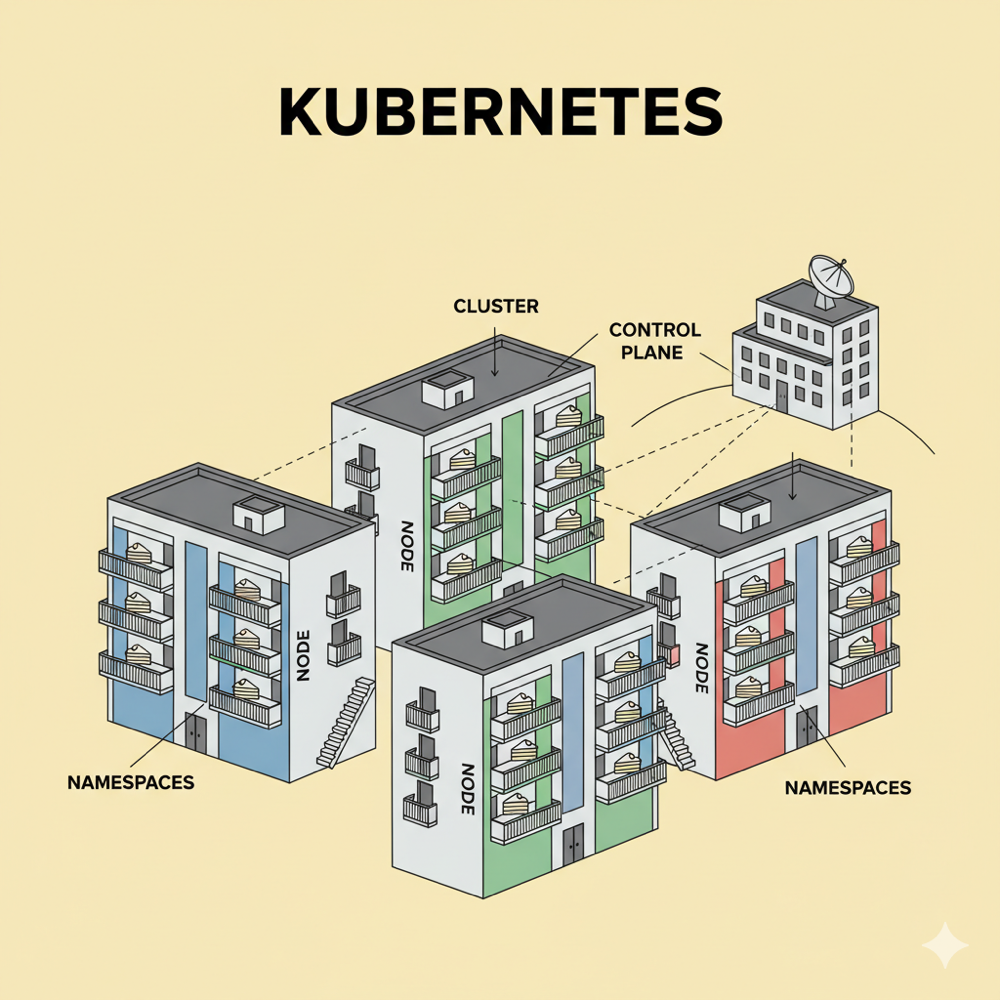

Od Dockera do Kubernetesa – czyli dlaczego potrzebujemy orkiestracji
Jakiś czas temu pisałem, czym jest Dockerfile i jak dzięki Dockerowi możemy zapakować aplikację w kontener.
Dockerfile nazwaliśmy przepisem, więc sam kontener w tym przypadku jest dla nas ciastem– zawsze takim samym, łatwym do przenoszenia i niezależnym od „kuchni”, w której powstał (o ile trzymamy się przepisu).
Wprowadzenie konteneryzacji rozwiązało duży problem w IT – aplikacje przestały być zależne od środowiska, w którym działają.
Ale… co w sytuacji, gdy mamy dziesiątki albo setki kontenerów, z których każdy odpowiada za inny kawałek systemu (mikroserwisy)?
Nagle pojawiają się pytania:
- Kto pilnuje, żeby kontenerów było zawsze tyle, ile potrzeba?
- Kto je uruchamia ponownie, gdy jeden się zepsuje?
- Kto skaluje system, gdy rośnie ruch?
- Kto utrzymuje porządek, gdy mamy wiele środowisk (dev, test, prod)?
Tutaj właśnie pojawia się orkiestracja, a wraz z nią Kubernetes.
Orkiestracja w dwóch słowach
Docker dał nam kontenery, jednak dopiero Kubernetes sprawił, że całe środowisko, w którym działają setki kontenerów, jest stabilne, skalowalne, samonaprawiające się, a przede wszystkim lepiej zarządzalne.
Pozwala między innymi na:
- Automatyczne rozmieszczanie aplikacji po dostępnych zasobach.
- Samonaprawianie – jeśli kontener się zepsuje, automatycznie uruchamiany jest nowy.
- Skalowanie – gdy nagle potrzebujemy 5 kopii zamiast dwóch żeby obsłużyć ruch.
- Porządek i izolację – możemy oddzielać środowiska i projekty.
Kubernetes jako osiedle mieszkaniowe
By lepiej to zobrazować, wyobraźmy sobie klaster Kubernetes jako całe osiedle bloków.
No ale kto tym zarządza? Tutaj wkracza Control Plane – zestaw komponentów odpowiedzialnych za sterowanie klastrem.
W analogii do osiedla Control Plane to spółdzielnia mieszkaniowa, która pilnuje wszystkiego. W jej skład wchodzą m.in.:
- API Server – recepcja, przez którą przechodzą wszystkie polecenia.
- Scheduler – decyduje, w którym bloku (Node) znajdzie się nowe mieszkanie (Pod).
- Controller Manager – pilnuje, by rzeczywistość zgadzała się z planem (np. zawsze było tyle mieszkań, ile zadeklarowano).
- etcd – księga wieczysta osiedla, w której zapisany jest stan całego klastra.

Poza tym mamy:
- Node = blok – budynek, w którym mieszkają aplikacje.
- Pod = mieszkanie – w bloku mamy wiele mieszkań, każde to osobna przestrzeń.
- Kontener = ciasto w mieszkaniu – w mieszkaniu może być jedno ciasto albo kilka.
- Namespace = kolor klatki – różne kolory pozwalają odróżniać środowiska lub projekty.
- Cluster = całe osiedle – zbiór wszystkich bloków i mieszkań, w których działają aplikacje.
Podsumowanie
Kubernetes składa się z takich „bloczków”:
- Kontener = ciasto
- Pod = mieszkanie, w którym stoją ciasta
- Node = blok pełen mieszkań
- Cluster = całe osiedle
- Control Plane = spółdzielnia, która wszystkim zarządza
- Kubernetes (orkiestracja) = harmonia i automatyzacja, dzięki której nie musisz sam zarządzać kontenerami.
Wpływ Kubernetesa można streścić w kilku kluczowych punktach:
- Niezawodność aplikacji – automatyczne naprawianie i podnoszenie usług, gdy padną.
- Skalowalność – dynamiczne zwiększanie zasobów.
- Elastyczność wdrożeń – aktualizacje bez zatrzymywania całego systemu.
- Automatyzacja zarządzania – samodzielne pilnowanie stanu środowiska.
- Izolacja i porządek – separacja środowisk i projektów.
- Przenośność – czy to cloud, czy on-prem, wdrożenie wygląda podobnie.
- Standaryzacja – wspólny język dla osób zarządzających.
Dla zainteresowanych – głębiej o Kubernetes
Powyższa analogia z osiedlem dobrze oddaje podstawy, ale Kubernetes to ogromny ekosystem. Jeśli chcesz lepiej zrozumieć, jak to wszystko działa, warto poznać kilka dodatkowych pojęć i mechanizmów:
1. Architektura Control Plane
- API Server – punkt wejścia, z którym komunikują się użytkownicy i komponenty klastra.
- etcd – rozproszona baza danych przechowująca stan klastra (np. ile podów działa).
- Scheduler – decyduje, na którym węźle uruchomić nowy Pod na podstawie dostępnych zasobów.
- Controller Manager – zestaw kontrolerów pilnujących, by stan zadeklarowany (np. 5 replik) zgadzał się ze stanem rzeczywistym.
2. Komponenty na węzłach (Nodes)
- Kubelet – agent działający na każdym węźle, który komunikuje się z API Serverem i uruchamia kontenery.
- kube-proxy – odpowiada za routing i reguły sieciowe w klastrze.
- Container Runtime (np. containerd) – silnik, który faktycznie uruchamia kontenery.
3. Kluczowe obiekty w Kubernetes
- Deployment – definiuje, ile kopii aplikacji ma działać i jak je aktualizować.
- ReplicaSet – dba o to, żeby zawsze działała zadana liczba replik Podów.
- Service – zapewnia stabilny adres IP i load balancing pomiędzy Podami.
- Ingress – umożliwia wystawienie aplikacji na zewnątrz (np. przez HTTPS).
- ConfigMap i Secret – przechowują konfiguracje i wrażliwe dane.
- PersistentVolume (PV) i PersistentVolumeClaim (PVC) – zapewniają trwałą pamięć dla aplikacji (np. bazy danych).
4. Mechanizmy ułatwiające życie
- Health checks (Liveness i Readiness probes) – sprawdzają, czy aplikacja działa poprawnie.
- Horizontal Pod Autoscaler (HPA) – automatyczne skalowanie na podstawie obciążenia.
- Rolling updates – płynne aktualizacje aplikacji bez przestojów.
- Namespaces – izolacja środowisk i projektów.